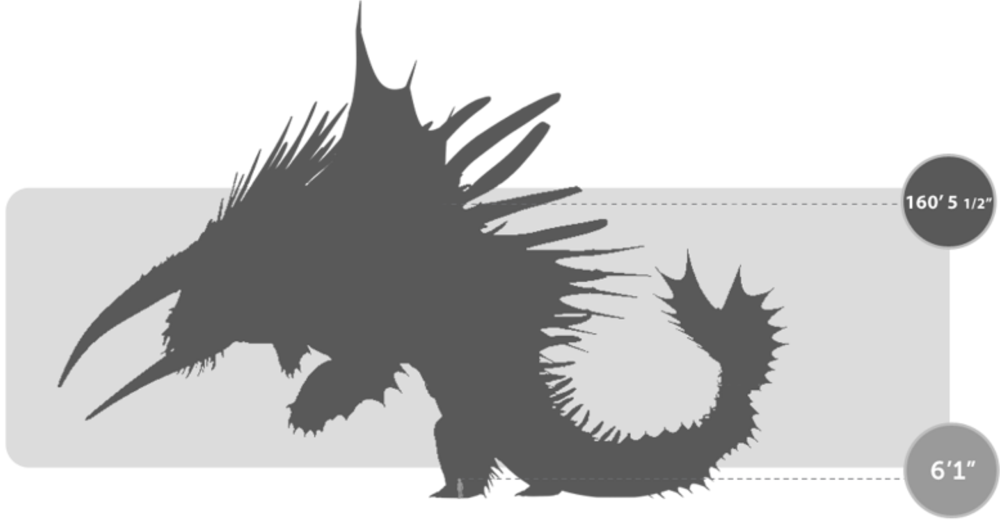
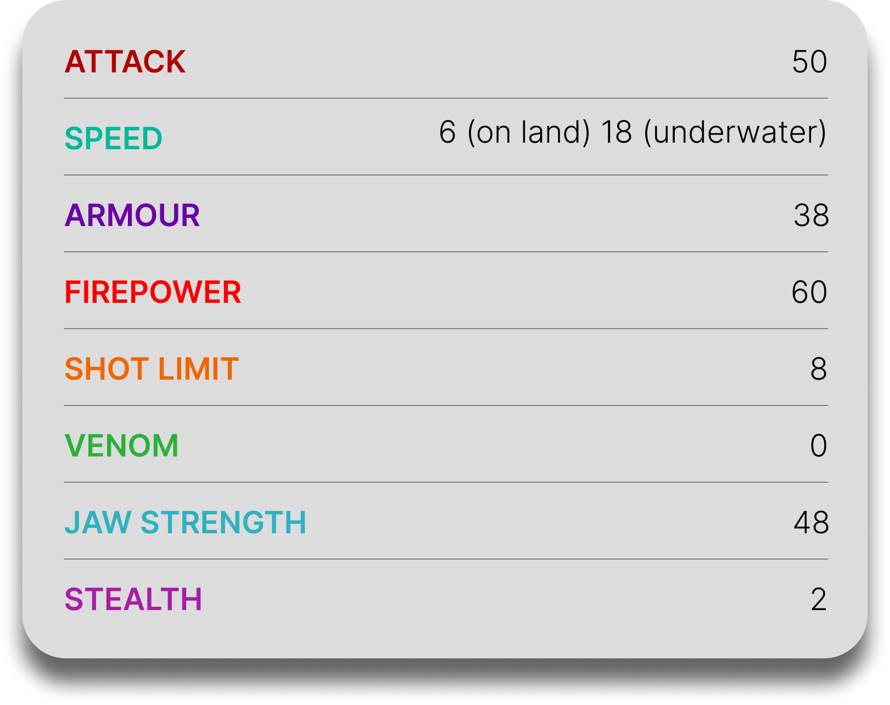

Bewilderbeast
General Overview
The Bewilderbeast is a colossal dragon belonging to the Tidal Class. Known as the "King of Dragons," it is one of the largest and most powerful species in existence. As a natural Alpha, it possesses the rare ability to control the will of other dragons, commanding entire flocks and shaping the balance of the dragon world through its immense power and presence.


Physical Appearance
- Body & Color: It has a massive, stocky body covered in thick scales, usually in icy white or gray tones suited for arctic environments.
- Head & Face: Its face is broad and flat with enormous tusk-like horns extending from the sides of its head, along with crown-like spikes and ridges.
- Appendages: It has four enormous legs that support its immense weight, giving it a powerful and grounded stance.
- Wings & Tail: Its wings are reduced and fin-like, as it does not fly, while its large tail and fins aid movement through water and ice.
Abilities and Combat
- Alpha Control: As an Alpha Dragon, it can dominate and control the minds of other dragons, forcing them to obey its commands.
- Ice Breath: It unleashes powerful streams of ice capable of freezing enemies, terrain, and even creating massive ice structures.
- Ice Nest Creation: It can construct enormous dragon nests and shelters out of solid ice, providing protection for entire flocks.
- Colossal Strength: Its immense size allows it to crush ships, landscapes, and enemies with overwhelming force.
- Underwater Adaptation: It is perfectly adapted to aquatic life, able to move efficiently through deep ocean environments.
- Shockwave Roar: Its roar can intimidate enemies and reinforce its dominance over surrounding dragons.
Behavior and Personality
- Intelligence: It is highly intelligent and capable of strategic leadership over entire dragon populations.
- Temperament: Its temperament varies depending on its environment and treatment, ranging from protective and nurturing to aggressive and dominating.
- Behavior: It acts as the central ruler of dragon colonies, providing shelter, food, and structure for those under its control.
- Social Traits: Unlike most dragons, it is deeply social in a hierarchical sense, acting as a leader rather than a lone creature.
- Diet: Its known diet primarily consists of fish.